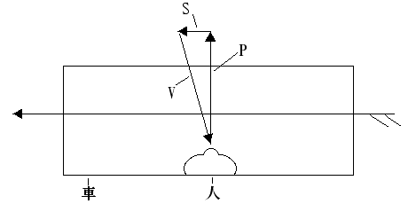
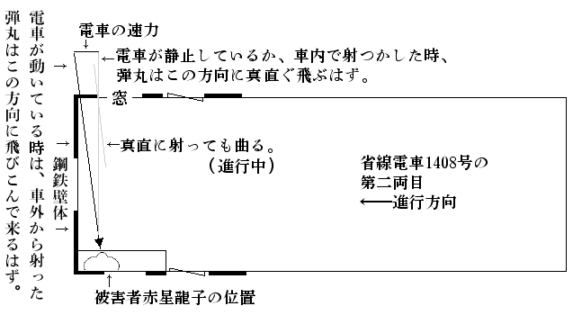

| 省線電車の射撃手 | |
| 海野 十三 | |
| (2012) | |
省線電車の射撃手
海野十三
１
帝都二百万の市民の心臓を、一瞬にして摑
んでしまったという評判のある、この「射撃手
」事件が、突如
として新聞の三面記事の王座にのぼった其の日のこと、東京××新聞の若手記者風間八十児
君が、此の事件に関係ありと唯今目をつけている五人の人物を歴訪
して巧
みに取ってきたメッセージを、その懐中手帳から鳥渡
失敬して並べてみる。
＊ ＊ ＊
「僕は、探偵小説家の戸浪
三四郎である。かねがね僕は、原稿紙上の探偵事件ばかりを扱っているのに慊
らず、なにか手頃の事実探偵事件にぶつかってみたいものだと考えていたところ、こんど偶然の機会をつかみ、この『射撃手』事件の捜査のお仲間入りができるようになったのである。......だが僕は、仕事が忙しいうえに、至って面倒くさがり屋だから、事件が起っても、いつも直
ぐに駆けつけて犯罪の現場
調べをやるというような勤勉
な真似ばかりは出来ない。事件に関する僕の知識は大江山
捜査課長の報告に基
いているものも少くない」（東京郊外、大崎町
の同氏邸にて）
「わたくし［＃「わたくし」は底本では「わたしく」］
はＪＯＡＫ放送局技術部の笹木光吉
です。このたびは飛んだことから事件に関係を持つようになりました。と申しますのは、わたくし［＃「わたくし」は底本では「わたしく」］
の邸宅が、事件の犯罪現場に近いところにあって、そのうえ可
なり広い面積
を占めているところから、犯人が邸内のどこかを、うろついているんじゃないかとの御疑いから、警視庁のお呼出しを、しばしば蒙
るようになったのだそうです。なったのだそうです、とは妙な申し様
でございますが、これは大江山捜査課長殿のお話なのですが、わたくしはそれについて半信半疑でいます。それと申しますのが、わたくしが科学者であるというのを口実
にして、わたくしには関係のない事柄にまで科学的意見を徴
されたことが、随分と多うございますのです」（上目黒
の笹木邸内新宅に於て）
「僕は帆村荘六
です。僕は或る本職を持っている傍
、お恥
かしい次第ですが、『素人
探偵』をやっています。無論、その筋の公認を得て居りまして、唯今の捜査課長の大江山も、僕を御存知です。こんどの殺人事件は別に依頼をうけたわけではありませんが、始終注意しています。ひょっとすると、事件の成行次第
で、第一線に立たなきゃならないかも知れません。僕はこの事件に、非常な魅力を感じています」（電話にて）
「あたくしは、赤星龍子
と申します。あたくしは、自分自身のことを余り申上げる気が致しません。そのために疑いが深くなっても仕方がありません。こんな事件に、何
にも罪のないあたくしみたいなものが引込まれるなんて、あたし一生の不運だと思っていますわ、なんでもいいんです」（東京郊外、渋谷町
鶯谷
アパートにて）
「大江山警部。年齢三十七歳。警視庁刑事部捜査課長。在職満十年。今回省線
電車内に起りたる殺人事件は、本職を始め警視庁を愚弄
することの甚
だしきものにして、爾来
極力
探索
の結果、此程
漸
く犯人の目星
を摑
むことを得たるを以て、遠からず事件解決の搬
びに至るべし。なお本職を指して米国
市俄古
の悪漢
団長アル・カポーンに買収されたる同市警察署長某氏に比するものあるは憤慨
を通り越して、そぞろ噴飯
を禁じ得ざるなり」（警視庁において、タイプライターでうった原文を手交
）
＊ ＊ ＊
さて「射撃手」事件の、そもそも発端
は、次のようだった――
２
もう九月も暮れて十月が来ようというのに、其の年はどうしたものか、厳しい炎暑
がいつまでも弛
まなかった。「十一年目の気象の大変調ぶり」と中央気象台は、新聞紙へ弁解の記事を寄せたほどだった。復興新市街をもった帝都の昼間は、アスファルト路面が熱気を一ぱいに吸いこんでは、所々にブクブクと真黒な粘液
を噴
きだし、コンクリートの厚い壁体
は燃えあがるかのように白熱し、隣りの通
にも向いの横丁
にも、暑さに脳髄を変にさせた犠牲者が発生したという騒ぎだった。夜に入ると流石
に猛威をふるった炎暑
も次第にうすらぎ、帝都の人々は、ただもうグッタリとして涼
を求め、睡眠をむさぼった。帝都の外郭
にそっと環状
を描いて走る省線電車は、窓という窓をすっかり開き時速五十キロメートルの涼風
を縦貫
させた人工冷却
で、乗客の居眠りを誘った。どの電車もどの電車も、前後不覚に寝そべった乗客がゴロゴロしていて、まるで病院電車が馳
っているような有様だった。そんな折柄、この射撃事件が発生した。その第一の事件というのが。
時間をいうと、九月二十一日の午後十時半近くのこと、品川方面ゆきの省線電車が新宿
、代々木
、原宿
、渋谷
を経
て、エビス駅を発車し次の目黒駅へ向けて、凡
そその中間と思われる地点を、全速力
で疾走していた。この辺を通ったことのある読者諸君はよく御存知であろうが、渋谷とエビスとの賑
やかな街の灯も、一歩エビス駅を出ると急に淋しくなり、線路の両側にはガランとして人気
のないエビスビール会社の工場だの、灯火
も洩
れないような静かな少数の小住宅だの、欝蒼
たる林に囲まれた二つ三つの広い邸宅だのがあるきりで、その間間
には起伏のある草茫々
の堤防や、赤土がむき出しになっている大小の崖
や、池とも水溜
ともつかぬ濠
などがあって、電車の窓から首をさしのべてみるまでもなく、真暗で陰気くさい場所だった。この辺を電車が馳
っているときは、車内の電燈までが、電圧が急に下りでもしたかのように、スーッと薄暗くなる。そのうえに、線路が悪いせいか又は分岐点
だの陸橋
などが多いせいか、窓外から嚙みつくようなガタンゴーゴーと喧
しい騒音が入って来て気味がよろしくない。という地点へ、その省線電車が、さしかかったのだった。
その電車は六輌連結だったが、前から数えて第四輌目の車内に、みなさんお馴染
の探偵小説家戸浪三四郎が乗り合わせていた。もし読者諸君がその車輌に同車していたならきっとおかしく思われたに相違
ない。というのは、戸浪三四郎は『新青年』へ随筆を寄稿してこんなことを云った。
「僕は電車に乗ると、なるべく若い婦人の身近くを選んで座を占める。彼女の生
ぐさい体臭や、胸を衝
くような官能的色彩に富んだ衣裳や、その下にムックリ盛りあがった肢態
などは、日常吾人
の味
うべき最も至廉
にして合理的なる若返
り法である」と。そして、成程
戸浪三四郎の向いには、桃色のワンピースに、はちきれるようにふくらんだ真白な二の腕も露
な十七八歳の美少女が居て、窓枠に白いベレ帽の頭を凭
せかけ、弾力のある紅い口唇
を軽くひらいて眠っていた。それから戸浪三四郎の隣りには、これはなんと水々しく結
いあげた桃割
れに、紫紺
と水色のすがすがしい大柄の絽縮緬
の着物に淡黄色
の夏帯をしめた二十歳
を二つ三つ踏みこえたかと思われる純日本趣味の美女がいた。車内にチラホラ目を覚
している組の連中は、この二人の美しい対照に、さり気ない視線をこっそり送っては欠伸
を嚙みころしていたのだった。
車輪が分岐点
と嚙み合っているらしくガタンガタンと騒々
しい音をたてたのと、車輌近くに陸橋のマッシヴな橋桁
がグオーッと擦
れちがったのとが同時だった。乗客は前後にブルブルッと揺
られたのを感じた。その躁音
と激動に乗せられたかのように、例のワンピースの美少女の身体が前方へ、ツツツーと滑
った。両膝をもろ
に床の上にドサリとつくと、ブラリと下った二本の裸腕で支えようともせず、上体をクルリと右へ捩
ると、そのままパッタリ、電車の床にうつ伏
せになって倒れた。
車内の人々は、少女が居眠りから本眠りとなり、うっかり打転
ったのだったと思った。乗客たちは、洋装のまくれあがったあたりから覗いている真白のズロースや、恐いほど真白な太股の一部に灼
けつくような視線を送りながら、今この少女が起きあがって、どのような魅力のある羞恥
をあらわすことだろうかと、期待をいだいた。だが、一同の期待を裏切って、少女はなかなか起き上ろうとしなかった。ピクリとも動かなかった。
「様子がヘンじゃありませんか、皆さん！」
そう云って立ち上ったのは、商人体
の四十近くの男だった。一座は俄
かにザワめいて、ドヤドヤと少女の周囲に馳けよった。
「早く起してやり給え」
こう云ったのは、探偵小説家戸浪三四郎のうわずった声音
だった。
「モシモシ、娘さん」と甲斐甲斐
しく進みでた商人体の男は、少女の肩を、つっついた。無論、少女はなんの応答
もしなかった。さらばと云うので、彼氏は右手を少女の肩に、それから左手をしたから少女の胸に差入れて、グッと抱
え起した。少女の頭はガクリと胸に垂れ下った。ヌルリと滑った少女の胸部
だった。
「呀
ッ」抱きおこした少女を前から覗
いた男が、顔色をかえて、背後の人の胸倉
に縋
りついた。
「血だ。血――血、血、血ッ」その隣りの男が、気が変になったように声を震
わせて叫んだ。
「ヒエッ！」商人体の男は吃驚仰天
して、前後の考えもなく、少女の身体をその場にドサリと抛
り出した。
戸浪三四郎がこれに代って進み出ると、少女の身体をソッと上向きに寝かせた。人々の前に、少女の美しい死顔
が始めてハッキリと現れたのだった。左胸部を中心に、衣服はベットリ鮮血
に染っていた。その上、床の上に二尺四方ほどを、真紅
に彩
っているところをみると、出血は極めて瞬間的に多量だったものと見える。
「車掌君はいないか。駄目らしいが、一応早く医者に見せなくちゃいけない」
そこへ車掌が来た。
「皆さん、ずっと後
へ寄って下さい。電車は只今、全速力で次の駅へ急がせていますから......」
言葉の終るか、終らないうちに、電車は悲鳴に似たような非常警笛をならして、目黒駅の構内に突入して行った。電車が停車しない前に、専務車掌の倉内銀次郎はヒラリとプラットホームに飛び降り、駅長室に馳けこむなり、医者と警視庁とに電話をかけた。その間に電車は停り、美少女の倒れた第四輌目の乗客は全部、外に追いだされた。
３
駆けつけた附近の医者は、電車の床
の上に転
った美少女に対して、施
すべき何の策
をももたなかった。というのは、彼女の心臓の上部が、一発の弾丸によって、美事
射ちぬかれていたから。弾丸は左背部の肋骨にひっかかっているらしく、裸にしてみた少女の背中には弾丸の射出口
が見当らなかった。「銃丸
による心臓貫通――無論、即死
」と医者は断定した。
惨死体
を乗せた電車は、そのまま回避線
へひっぱり込まれ、警視庁からは大江山捜査課長一行が到着し、検事局からは雁金
検事の顔も見え、係官の揃うのを待ち、電車をそのまま調室
にして取調べが始まった。
大江山警部は、やや青ざめた神経質らしい顔面を、ピクリと動かして、専務車掌の倉内銀次郎を招いた。
「倉内君、君に判っている一と通りを話してきかせ給え」
「ハァ、それはこうなんです」と彼は、係官の前の小机
の上に、線路図や、電車内の見取図を拡
げて、彼が乗客の注意で、殺人の現場にかけつけてのちに見た事柄や、乗客から聞いたそれ以前の話など、既に読者諸君が御存知の事実を述べた。
「君は、事件の起ったときに、どの位置に居たかネ」大江山警部は訊問
した。
「ハッ、やはりあの第四輌目に居りましたが、車掌室が別になっているもんで、早く気がつきませんでした」
「君は車掌室のどの辺に居たか」
「右側の窓のところに頭部を当てて立って居りました」
「事件の前後と思われるころ、何かピストルらしい音響をきかなかったか」
「電車の音が騒々
しいもので聞きとれませんでした」
「君は窓外の暗闇
に何かパッと光ったものを認めなかったかい」
「ハッそれは......別に」
「君の位置から車内が見えていたか」
「見えていません。カーテンが降りていましたから......」
「車内へ入ってから、銃器から出た煙のようなものは漂
っていなかったか」
「御座いませんでした」
「車内の乗客は何人位で、男女の別はどうだった」
「サア、三十名位だったと思います。婦人乗客が四五人で、あとは男と子供とでした」
「その車の定員は？」
「百二名です」
「これは参考のために答えて貰いたいんだが、あの際、銃丸は車内で発射されたものか、それとも車外から射ちこんだものか、何
れであると思うかね、君は」
大江山警部が、少女の射ち殺された頃の事情を一向弁
えぬ専務車掌に、こんなことを聞くのは、愚問の外のなにものでもないと思われた。
「車内で射ったんでしょうと思います」
専務車掌の倉内は、警部の愚問に匹敵
するような愚答
を臆面
もなくスラリと述べた。
「じゃ君は何故、あの車輌に居た乗客を拘束
して置かなかったのか」
「......只今
になってそう気が付いたもんですから」
「そう思う根拠は、なにかね」
「別に根拠はありませんが、そんな気がするんです」
「それでは仕方がないね。なんだったら、ここに居られるあの時の乗客有志を一時退場ねがった上で、君の考えをのべて貰ってよいが......」
車内に居た乗客の多くは、事件に係合
になるのを厭
がったものと見え、死人電車が目黒駅のプラットホームに着くと、バラバラ散らばってしまい、このところまで随
いてきたのは僅か二人だった。その一人は、左手を少女の血潮で真赤に染めた商人体
の四十男で、もう一人は探偵小説家の戸浪三四郎だった。
「ばば馬鹿を言っちゃいかん」と其の商人体の男が、たまり兼ねて口を差入れた。「いま聞いてりゃ、車内の者が射ったということだが君が出て来たのは随分経ってからじゃないか。そんなに後
れ走
せに出てきて何が判るものか。第一、あたしはあの車内に居たが、ピストルの音をきかなかった。ね、あなたも聞かなかったでしょう」と戸浪三四郎の方を振りかえった。
戸浪は黙って軽く肯
いた。
「ほら御覧なせえ、鉄砲弾
は窓の外から飛んできたのに違
げえねえ。あまり根も葉もないことを言って貰いたかねえや。手前
の間抜けから起って、多勢
の中からコチトラ二人だけがこうして引っ張られ、おまけに人殺しだァと証言するなんて、ふざけやがって......」
「これ林三平さん、静かにしないか」と、車掌に喰ってかかろうとする商人体の男を止めたのは、大江山警部だった。「戸浪三四郎さんから何か別な陳述
を承
りたいですが」
「僕はすこし意見を持っています。先刻
申しあげたように探偵小説家という立場から僕は申すので、或いは実際と大いに違っているかも知れません。僕は殺された美少女、――一宮
かおるさんと云いましたかネ、かおるさんの直ぐ向いに居たのですが、確かにピストルの爆音を耳にしませんでした。ですが、ちょっと耳に残る鈍
い音をきいたんです。さよですなア、空気をシュッと切るような音です。きわめて鈍い、そして微
かな音でした。これはどうやら右の耳できいたのです。右の耳というと、電車の進行方面の側の耳です。その行手には、倉内君の居られた車掌室があります。またその右の耳のある隣りには二尺ほど離れて、日本髪の婦人が腰をかけて居りました。そんなことから思い合わせると、弾丸
は僕の身体より右側の方からとんで来たと思われます。林さんは僕よりずっと左手に居られたので関係はないようです。車内で射ったとすれば、私も嫌疑者
の一人でしょうが、僕より右手にいた連中も同時にうたがってみるべきでしょう。日本髪の婦人は勿論のこと、失礼ながら倉内車掌君も同類項
です」
「すると貴方は、車内説の方ですか」と大江山警部が尋ねた。
「いえ、寧
ろ僕は車外説をとります。弾丸
は車外から射ちこまれ、例の日本髪の婦人と僕との間をすりぬけて、正面に居た一宮かおるさんの胸板
を貫
いたのです。シュッという音は、銃丸
が僕の右の耳を掠
めるときに聞こえたんだと思います」
「もう外に聞かしていただくことはありませんか」
「現場に居た人間としては、もう別にありません。老婆心
に申上げたいことは、あの現場附近を広く探すことですな。もしあの場合銃丸
が乗客にあたらなかったとしたら、銃丸は窓外へ飛び出すだろうと思うんです。いや、そんな銃丸が既に沢山落ちているかもしれません。そんなものから犯人の手懸りが出ないかしらと思います。屍体
もよく検
べたいのですが、何か異変がありませんでしたか」
「いや、ありがとう御座いました」と警部は戸浪三四郎の質問には答えないで、彼の労を犒
った。
４
大江山捜査課長は、警視庁の一室で唯
ひとり、「省線電車射撃事件」について、想念を纏
めようと努力していた。
戸浪三四郎が「一宮かおるの屍体に異常はないか」と聞いたのは炯眼
だった。屍体の纏
っていた衣服の左ポケットに、おかしな小布
が入っていた。それは丁度
シャツの襟下
に縫いつけてある製造者の商標
に似て、大きさは三センチ四方の青い小布で、中央に白い十字架を浮かし、その十字架の上に重ねて赤い糸で、横向きの髑髏
の縫いがあった。
この髑髏の小布
はなにを示すものなのだろう。
お守りなのであろうか、と考えた。あまりに平凡である。
不図
思いついたことは、これはある不良少女団の団員章
ではないか、と。殺された一宮かおるは、××女学校の校長の愛娘
だったのであるが、教育家の家庭から不良児の出るのは、珍らしいことではない。かおるは不良少女であったが、仲間の掟
を破ったために殺された、と見てはどうであろう。
大江山警部は給仕を呼んで、不良少女調簿
をもってこさせると丹念にブラック・リストの隅から隅まで探しまわったが、かおるの名前も、その怪しげな徽章
も見つからなかった。そうすると、未検挙の不良団なのであろうか。
このように考えてくると、銃丸
は車内でぶっぱなされたと考えるのが、本道
である。だが車内でズドンという音を聞いたものがないではないか。それなら消音
ピストルを用いたものと考えてはどうか。
だが乗客の多くは逃げてしまった。商人と称する林三平と、小説家の戸浪三四郎とを疑うのは最後のことである。車掌の倉内は、たった一人で車掌室
に居ただけに、すこし弁明がはっきりしない。答弁にすこしインチキ臭いところが無いでもない。彼はピストルの音をきかなかったという。騒音
に慣れた彼が、ピストルの音をきかなかったというのであるからそれは本当であろう。
ところが刑事が出かけて、現場附近の住民に聞き正したところによると、当日夜の十時と十一時との間に爆音をきいたという人間が三人ばかり現れた。そのうちの一人は、現場
に割合い近い踏切の番人だったが、丘陵にひびくほど相当大きい音だったという。但し発砲の音というよりも、自動車がパンクしたような音に近かったという。これは帝都全市のタクシーや自家用自動車につき調査中であるから、二三日のうちに判明するであろう。
もしそれが発砲の音だったら、車掌の耳はどうかしていたことになりはしまいか。電車の騒音は、車内よりもむしろ車外の方が大きいのだから。専務車掌室の扉
を細目にひらいて、消音ピストルを打ったと考えてはどうであるか。それでは銃丸
は、かおるの左胸
を側面
から射つことになる。然
るに彼女の弾丸による創管
は、ほんの少し左へ傾いているが、ほとんど正面から真直
に入っている。これは違う。それでは、電車の進行中、彼は窓から屋根によじ昇り、屋上の欄干
に足を入れて真逆
にぶら下ると丁度
、顔が窓の上枠
のところにとどくから、そのまま蝙蝠式
にぶら下って消音ピストルをうち放つ。それがすむと、何喰
ぬ顔をして車掌室にかえり、室内の騒ぎを始めて知ったような風を装
って馳けつける。うん、こいつは出来ないことじゃない。車掌倉内銀次郎の身辺
をすこし洗ってみよう。
「コツ、コツ！」と扉
を叩く者がある。
「よろしい」大江山警部は、扉の方を向いた。扉がスウと開いた。入って来たのは、給仕だった。
「速達でございます」そう云って給仕は、課長の机上
に、茶色の大きい包紙のかかっている四角い包を置いて、出て行った。
警部は、注意して包をひらいてみた。中には、「ラジオの日本」という雑誌の昭和五年十二月号が一冊入っているきりだった。それを取上げてペラペラと頁
をめくってみると、半頃
に頁
を折ってあるところがあった。そこを開けると、白い小布
が栞
のように挿
まっていて、矢印が書いてある。矢印の示すところには赤鉛筆で、傍線
のついている記事があった。表題は、「無線と雑音の研究」とあり、「大磯
ＨＳ生
」という人が書いているのだった。大江山警部にとって、無線の記事は一向ありがたくなかった。彼は雑誌を抛
りだそうと思ったが、「雑音」という文字が、電車の騒音と関係がありはしまいかと思って、兎
に角
、ぽつりぽつりと読みはじめた。直ぐに彼は、見当ちがいだったことに気がついたけれども、その記事は、思ったよりも平易
である上に、その内容は大江山警部の注意を喚起
するのに充分だった。
「無線と雑音の研究」を思いたったＨＳ生は、東海道線大磯駅から程とおからぬ山手に住んでいる人だった。彼の家にはラジオ受信機があったが、ラジオを聴いていると、それが聴きとれないほどのガリガリッという大きな雑音が、一日にうちに数十回入ってくるのだった。彼はラジオに雑音の起る時刻を測ってみたところ、それは毎日きまった時刻にガリガリッと鳴ることを発見した。それから、探求
を進めてゆくと、雑音の原因は、家の前を通る列車の電気機関車が、架空線
に接触するところで、小さい火花を生ずるためで、殊
に大きい雑音は、架空線の継
ぎ目
のところで起ることが判った。その結果、受信機で雑音を数えながら、時計をみていると、列車が毎時幾キロメートルの速度
で走っているか、又列車はどの地点を走っているかが、家の中に居ながらして、手にとるように判るというのである。ＨＳ生は、大磯附近の地図や雑音の大きさを示す曲線図を沢山挿入
して、これを説明してあった。
「こりゃ面白い発見だ」と大江山警部は、思わず独言
を言った。「だが、この記事が、なにになるというんだ」
なにか省線電車射撃事件に関係があるようでいて、さァそれはどういう関係だと聞かれると、説明ができなかった。ただ漠然
たる一致が感じられるばかりだった。警部は、それを、自分の科学知識不足に帰
して、ちょっと忌々
しく感じたのだった。それにしても、一体誰がこの雑誌を送ってよこしたのだ。
また扉
を叩くものがあった。部下の多田刑事であることは開けてみるまでもないことだった。応
と答えると、果して多田刑事が入ってきた。彼の喜びに輝いている顔色はなにごとかを発見してきたのに違いない。
「課長！ とうとう面白いものを見付けてきました。これです」多田は、そう云って、小さい紙包を、大江山警部の前に置いた。
警部は、それを手にとって開いてみると、二個の薬莢
だった。
「ほほう、これはどこにあった」
「現場附近の笹木邸
の塀
の下です」
「待て待て、これが弾丸
に合うかどうか」と警部はやおら立って傍
らの硝子函
から弾丸をつまみ出すと薬莢に合わせてみた。果然
、二つはピタリと合って、一つのものになった。警部が硝子函からとり出したのは、殺された一宮かおるの体内から抜きとった弾丸だったので、多田刑事の拾ってきたのは、紛
れもなく、その弾丸を打ち出した薬莢にちがいないと思われる。薬莢が二個で、弾丸は一個――そこに謎がないでもなかったが。
「お手柄だ。そして笹木邸をあたってみたかい、多田君」
「早手廻
しに、若主人の笹木光吉
というのを同道
して参りました。ここに大体の聞書
を作って置きました」
そう云って、多田刑事は、小さい紙片
を手渡した。警部は獣
のように低く呻
りつつ、多田の聞書というのを読んだ。「よし、会おう」
案内されて、室へ静かに姿をあらわした笹木光吉は、三十に近い青年紳士だった。色は黒い方だったが、ブルジョアの息子らしく、上品ですこし我
が強いらしいところがあった。
「飛んだ御迷惑をかけまして」と大江山警部の口調は丁重
を極
めていた。「実は部下のものが、こんなものを（と、二個の薬莢と一個の弾丸を示しながら）拾って参りましたが、薬莢の方はお邸の塀下に落ちて居り、弾丸は、ここに地図がありますが、線路を越してお邸
の向い側にあたる草叢
から拾い出したのです。お心あたりはございませんか」
そう云って刑事は、白い西洋紙の上に、三品をのせて差し出した。多田刑事は、課長の出鱈目
に呆
れながら、青年の顔色を窺
った。
「一向に存じません」と笹木はアッサリ答えた。「指紋が御入用
なら、遠慮なく本式におとり下さい」
大江山警部は、笑いに、赭
い顔を紛
らせながら、白い西洋紙をソッと手許
へひっぱったのだった。
「九月二十一日の午後十時半には、どこにおいででしたか、承
りたい」
「家に居ましたが、もう寝ていました。私はラジオがすむと、直
ぐ寝ることにして居りますから......」
「おひとりでおやすみですか」
「ええ、どうしてです。私のベッドに、独
り寝ます。妻は、まだありません」
「誰か、当夜ベッドに寝ていられてのを証明する人がありますか」
「ありますまい」
「十時半頃、何か銃声みたいなものをお聞きになりませんでしたか」
「いいえ。寝ていましたので」
「御商売は？」
「ＪＯＡＫの技術部に勤めてます」
「ＪＯＡＫ！ アノ放送局の技師ですか」大江山警部の顔面筋肉
がピクリと動いた。
「そうです、どうかしましたか」
「『ラジオの日本』という雑誌を御存知ですか」
「無論知っています」
「貴方のお名前は光吉
ですか」
「光吉
です」
「大磯に別荘をお持ちですかな」
「いいえ」
「だれかに恨
みをうけていらっしゃいませんか」
「いいえ、ちっとも」
「邸内に悪漢が忍び入ったような形跡
はなかったですか」
「一向にききません」
大江山警部は、さっぱり当りのない愚問
に、自
ら嫌気
がさして、鳥渡
押し黙った。
「省線電車の殺人犯人は、まだ見当がつかないのですか」と反対に笹木光吉が口を切った。
「まだつきません」と警部は、ウッカリ返事をしてしまった。
「銃丸
は車内で射ったものですか、それとも車外から射ちこんだものなんですか」
「......」警部はむずかしい顔をしただけだった。
「銃丸を身体の中へ打ちこんだ角度が判ると、どの方角から発射したかが識
れるんですが、御存知
ですか。殺されたお嬢さんは、心臓の真上を殆んど正面からうたれたそうですが、正確にいうとどの位の角度だけ傾
いていましたかしら」
「さあ、それは......」警部はギクリとした。彼は屍体に喰
い込んだ弾丸の入射角
を正確に測ろうなどとは毛頭
考えたことがなかった。「それは面白い方法ですね」
「面白いですよ、いいですか、これが電車です。電車の速度をベクトルで書くと、こうなります、弾丸の速度はこうです......」と笹木光吉は、三角定規
を組合わしたような線を、紙の上に引いてみせて、「これが弾丸
の入射角
です。分解するとどの方向からとんで来たか、直ぐ出ます、やってごらんなさい」

「あとからやってみましょう」
と警部は礼を言った。
「射たれたとき、お嬢さんの身体はすこし右に倒れかかっていたそうですね」
「ほう、それをどうして御存知です」警部は驚愕
を強
いて隠そうと努力するのだった。
「あの晩、邸へ遊びに来た親類の女が云っていました。殺されたお嬢さんの直ぐ前に居たのだそうです」
「ああ、それでは若
しや日本髪
の......」
「その通りです」
「その御婦人はどこに住んでいらっしゃいます」
「渋谷
の鶯谷
アパート」
「お名前は？」
「赤星龍子
」
５
大江山警部は、夜に入っても、捜査課長室から動き出そうとしなかった。事件に関係のありそうな「謎」は後から後へと山積
したものの、これ等
を解くべき「鍵
」らしいものは一向に見当らないのだった。
この上は恥
を忍び、あえて満都
の嘲笑
に耐えて、しっかりした推理の足場を組みたてて事件の真相を摑
まなければならない。警部はその第一着として、笹木光吉の残して行ってくれた弾丸の飛来方向
の計算にとりかかった。
改めて電話で、法医学教室へかおるの創管
の角度は正確なところ、幾度となってるかを問いあわしたり、鉄道局を呼び出して、エビス目黒間に於ける電車の速度変化を訊
ねたりして、数字を知ると、懸命に数式を解いた。なるほど、弾丸の飛来方向がちゃんと出て来たので現場を中心として、鉛筆でその方向に長々と直線をひっぱった。それは線路に、ほとんど九十度をなして交
る方向だった。そして、なんとその弾丸線は、笹木邸の北隅
を貫いているのである。しかも弾丸線のぶつかった塀の下こそは、部下の多田刑事が、薬莢をひろってきた地点だったではないか。その地点から、電車の窓までの最短距離は僅々
五十メートルしかなかったのだった。小さなピストルでも、容易に偉力
を発揮できるほどの近さだった。
それにしても、みすみす自分の邸が疑惑の的
になると知りながら、この計算法を教えていった笹木光吉の真意というものが、警部にはサッパリ解らなかった。彼は、課長室の椅子にふんぞり反
って、大きい頭をいくたびとなく振ってみたものの、笹木の好意と悪意とが互いに相半
ばして考えられるほかなかったのだった。
ジリジリと喧
しく課長室の卓上電話が鳴ったのは、このときだった。
「課長どのですか」そういう声は、多田刑事だった。
「そうだ、多田君どうした」
「あの赤星龍子を渋谷からつけて、品川行の電車にのりました。八時半でした。すると、私と赤星龍子の乗っていた車輌に、また殺人事件がおこりました」
「なに、人が殺された。銃創
かい」
「そうです。若い婦人、二
ツ木
兼子
という名前らしいです。弾丸のあたったのは、矢張り心臓の真上です」
「よし、直ぐゆく。乗客は禁足
しといたろうな」
「それが皆、出ちまったのです。あまり早く駅についたものですから......」
「馬鹿！」
大江山捜査課長はカンカンに怒って、四十哩
で自動車を飛ばして、待避線
に収容された死人電車にとびこんでいった。
「課長、こっちに殺されています」と悄気
かえった多田刑事が案内した。
「龍子はどうした」
「目黒で降りたようです」
「屍体なんか、どうでもよいから、今度からは龍子を其の場でとりおさえるんだぞ」
「課長、例の十字架に髑髏
の標章
の入った小布
が、死体の袂
の中から出てきました」
第二の犠牲者二ツ木兼子は二十歳あまりの和服すがたの丸ぽちゃ美人だった。
「弾丸は、この窓から、とんで入ったらしいです」
「地点はどうかッ！」
「昨日の一宮かおるの場合と全く同じなんです」
「ううむ」警部は呻
った。
「専務車掌は倉内銀次郎か、どうか」
「違います。倉内は今日非番で、出てこないそうです」
そう言っているところへ、赤と金との筋の入った帽子を被
った助役
が、真蒼
になって、とびこんできた。
「警視庁の方、ももも申し上げます」
「どうしたかッ」大江山警部は、ギョッとふりかえって、一喝
した。
「唯今、プラットホームへ入って来た上
り電車で、乗客がまた一名射殺されました」
「なに、又殺されたッ、女か男か」
「奥様風の二十四五になる婦人です」
「上り電車の窓は皆締めるよう、エビス駅長へ警告しろッ」
「ハッ、でもこの暑さでは......」
「しっかりしろ、暑さよりも生命じゃないか、助役君」
待避線
にはガラ空
き電車が二組も窮屈
そうにつながった。駅は上を下への大騒ぎだった。駅員はもとより、しっかりしていなければならない警官たちまでが、常識を喪
ったかのように、意味なく騒ぎまわった。捜査課長大江山警部だけは、眼を真紅
に充血させて呶鳴
りちらしてはいるものの、一番冷静だった。
第三の犠牲者は三浦糸子と云った。可
なり上背
のある婦人で、クッションのように軟
くて弾力のある肉付の所有者だった。銃丸は心臓の丁度真上にあたる部分を射って、大動脈
を破壊してしまったものらしい。第一、第二の犠牲者に比して創口
はすこし上方にのぼっているのだった。三人の犠牲者は、いずれも左側の座席に腰を下ろしていたことが判った。そのうえ弾丸の射ちこまれた地点までが、物差で測
ったようにピタリと一致していた。大江山警部の頭には、線路を距
てて、真暗な林に囲
れ立つ笹木邸の洋館が浮びあがってくるのを、払
いのけることができなかった。
警部は数名の刑事を手許
によんで、一人一人に秘密の命令を耳打ちした。駅員には、上り電車がプラットホームに到着しても、車内に異状
を認めない上でないと、乗客出入口の扉
を開いてはならないと命令した。
そのあとで警部は、今しがた第三の犠牲者のハンドバックから見付けてきた例の十字架に髑髏
の標章
を、車内の明るい燈火
の下で、注意深く調べた。前の二枚の標章
と合
わせてこれで三枚になったのだった。警部の面
には困惑
の色がアリアリと現れた。グッとその小布
を掌
のうちに握りしめると、警部は、車外に出てザクリと砂利
を踏んだ。
（おお呪
いの標章
よ）
警部は心の中でそう云って「ううむ」と呻
り声
をあげた。それを持っている人間ばかりが、どうして射殺されるのだろう。
窓外
から弾丸を射ちこんだとすれば、その犯人は、なんという射撃の名人だろうか。呪
いの標章
を贈ったその人間を覘
うこと正確に、しかもその心臓を美事
に射ち貫
くことは、実に容易ならぬ技量である。だがこの悪意ある射撃は、世紀末的な廃頽
せる現代に於
て、なんと似合わしいデカダン・スポーツではあるまいか。
小暗
いレールを踏み越えて、ヒラリとプラットホームに飛びあがった大江山警部の鼻先に、ヌックリ突立
った男があった。
「大江山さん、豪
いことになりましたね」
「おお、貴方は、探偵小説家の戸浪三四郎さんでしたな」と警部は云った。戸浪は洗いざらしの浴衣姿
というだらしの無い風
をしていたのだった。警部は戸浪三四郎が、第一の射殺事件のときに指摘してくれたヒントが、唯今になって否定することのできない明確な事実を生んでいるのに、思いあたった（この探偵小説家の名論が聞けるものなら）。――それは溺れる者がつかむという藁
以上のものであると、警部はみずからの心に弁解をして置いて口を開いた。「どうして、これへ来られましたな」
「これごらんなさい」そう云って彼の差出したのは、初号
活字の大きい見出しのついた東京××新聞の号外だった。
省線電車に
大胆不敵な射撃手現わる
前夜と同一犯人か
とあり、今夜の二ツ木兼子射殺事件がデカデカに報道されてあった。間もなく第三の三浦糸子射殺事件が更に大々的活字で報道されるのかと思うと、警部の耳底
に、新聞社の輪転機の轟々
たる響がにわかに聞こえてくるようだった。
「射撃手――だって、新聞は云ってますぜ。これで三人ですね」
「若い女性ばかりを覘
う痴漢射撃手です」と警部は、ムッとして思わぬことを言い放った。「ときに貴方はエロ探偵小説もお得意のようでしたな。ハッハッ」
「冗談云っちゃいけません、大江山さん、貴方は隠しておいでのようですが、省線電車の射撃手は地獄ゆきの標章
を呉
れておいて殺すというじゃありませんか。三人の犠牲者はどこの人で、どこを通ってきたのかを調べると三人に共通なもののあるのが発見されると思いますよ。そいつをひっぱってゆくと、十字架と髑髏
の秘密結社が出てくるんじゃないですか」
「秘密結社ですって？」
「そりゃ僕の想像ですよ」
戸浪三四郎は呪いの標章
についてもっと何かを知っているのだと、警部は悟
った。小説家にも尾行をつけることだ。「探偵小説家は実際の犯罪をしない。それは、いつもペンを走らせて犯罪を妄想
しているから、犯罪興奮力が鈍
っているのだ」と云った人があるが果してそうだろうか。
「だが戸浪さん。犯人を解く謎は、そればかりではなく、沢山
あるのですよ」
「謎がそう沢山あると思うのは、大間違いです」と戸浪は軽蔑
の口調をあらわして云った。「僕は案外単純な事件だと思うが......」
「戸浪さん、貴方は弾丸が車内で射たれたか又は車外から射ちこんだか、どっちと考えていますか」
「それですよ、大江山さん。僕は昨日その質問をうけたとき、車外説をもち出しました。今夜の殺人の話をきいてみますと、三人が三人とも同じ地点で、同じ右側にかけた人が、同じく心臓を射たれたそうですね。それは車内で射ったとしてもあり得ることですが、その正確なる射撃ぶりから推
して、何か車外の地点に、非常に正確な銃器を据
えつけて、機械的に的を覘
ったのだと考えた方が、面白くありませんか」
「すると、どんな機械なんでしょう」
「僕もよくは知りませんが、四・五センチの口径
をもったピストルなんて、市場
にはちょっと見当らない品です」
「ほほう、よく口径を御存知ですね」
「法医学教室にいる友人に聞いたのです。それで犯人は特殊な科学知識をもっていて、恐るべき武器を持っていると考えるのです。ピストルを消音にすること位は、わけはありません。発砲の火を隠すためには、相当長い管
をつかって、先に弾丸の出る小さい穴をあけとけばよろしい。専務車掌が窓外に火を見なかったというのも、こんな仕掛けをすれば説明がつきます。あとは、電気を使って発砲させることもできるでしょう」
「わかります！」と警部は、探偵小説家の途方もない想像力で煙
にまかれながら、合槌
をうった。
「射撃手が跳梁
するのは、三人が三人とも申し合わせたように夜間に限るのはどうしたものでしょう。いいですか、これは面白い問題です。車内に殺人鬼
がいるのだったら、なにも夜分を選ばなくても、真昼間だって割合空
いた電車があるでしょうから、射ちたくなる筈です。それがなくて夜に限るというのは、この精巧な器械を、或る地点に据えつける必要があるからなんです。器械や、犯人の姿を見られては困るからです」
大江山警部は、例の癖
をだして獣
のように呻
っていた。その一方に、探偵小説家というものは、こんなにまで科学的でなければ勤
まらないものかと、或る種の疑惑が湧いてこないでもないのだった。
「貴方はよくお調べですね」と警部が皮肉
のつもりで云った。
「貴方が見逃しているところを拾って、事件を早く解決したいのです。僕も容疑者の一人だそうですからね。ハッハッ」
刑事が一人、馳
けてきた。
「課長どの、総監閣下のお電話です」
「ナニ総監の......」警部は渋面
を作った。
「お気の毒ですなア」と戸浪が彼の背中をポンと叩いた。
総監は果して非常に不機嫌だった。大江山捜査課長は油汗
を拭
う暇
もなく、水を浴びたような顔をして、縷々
と陳述
した。
「君は、目黒の笹木光吉の情婦
である赤星龍子が本郷
の小柴木
病院で毎日耳の治療をうけているのを知っているか」と総監が突然言った。
「いや、存じませんが......」警部は耳の治療どころか、龍子が笹木の愛人であることも聞くのが始めてだった。
「そんなんじゃ困るね、君は」と総監のつっぱなすような声が受話器の中に反響した。「それから、戸浪三四郎が元浜松高等工業学校の電気科の先生をしていたことを知ってるか」
「ううウ」と警部は電話機に獅嚙
みついて呻
った。「そそそれも存じませんが......」
「......」総監は無言だった。総監も呻っているのであろう。
「総監閣下、失礼ですが、誰がそんなことを申しましたか」
「帆村荘六
氏じゃ、私立探偵の。いま私の邸に見えて居られる」
帆村荘六といえば、警部は知らぬ人でもなかった。まだ経歴の若い素人探偵だったが、モダーンな科学探偵術をチョコチョコふりまわし、事件を不思議な手で解決するので、少し評判が出てきた人だった。
「君が必要なとき、いつでも応援をして下さるそうだ。今、お願いしておこうか」
「いえ、それには及びません」大江山捜査課長は、泣きだしたいような気持をこらえて、断然
拒絶
した。
６
大江山警部は電話をガチャリと切ると、しばし其の場に立ちすくんだ。考えてみるまでもなく、彼の立場はたいへん不運だった。彼は今度の事件で、どうしたものか、犯人の目星を一向につけることができなかった。昨日今日の事件ではあるが、林三平、倉内銀次郎、戸浪三四郎、赤星龍子、笹木光吉と疑いたい者ばかり多いくせに、犯人らしい人物を指すことができないのだった。唯今の総監の言葉から思いついたことは、電気の先生だった戸浪が相当
頼母
しい探索をしていてくれるから、彼と同盟すれば、大いに便宜
が得られるであろうという見込みだが、但し戸浪自身が犯人の場合は全く失敗になるわけだった。戸浪に会って気をひいた上で決定しようと考えた。赤星龍子が笹木の愛人であるのは驚いたが、前後二回も、殺人のあった電車にのっていたのは、一寸
偶然とは考えられない。実は先刻部下に命じて置いた龍子の動静
報告がきた上で、もすこし詳
しく考えてみたい。......
大江山警部は電話のある室を出て、階段をプラットホームに下りながら、懐中時計を出してみた。もう夜も大分
更
けて、ちょうど十時半になっていた。昨日の今頃突如として起った射殺事件のことを思いだして、いやな気持になった。すると、どこやら遠くで、非常警笛
の鳴るのをきいた、と思った。
彼は階段の途中に立ちどまった。
「ポ、ポ、ポ、ポッ」
ああ、警笛
だ。紛
れもなく、上
り電車の警笛だ。次第次第に、叫音
は膨
れるように大きくなってくるではないか。彼は墜落
するように階段を駆けくだった。そのとき丁度
、叫喚怒号
する人間を積んだ上り電車が、驀地
にホームへ滑りこんできたのだった。
「やられたかッ」警部は呶鳴
った。
「また若い婦人です」と車掌が窓から叫んだ。
「窓があいているじゃないか、あれほど言ったのに」警部は真赤になって憤慨した。
「エビス駅を出るときには閉っていたんです」
「よォし、では乗客を禁足
しとくんだぞ」
「わかりましたッ」
大江山警部は、若い婦人の屍体
が転
っているという二輌目の車輌の前へ、かけつけた。窓がパタリと開いて、多田刑事の泣いているような顔が出た。
「課長どの、殺されたのは赤星龍子です」
「えッ、赤星龍子が――」
総監から注意のあったばかりの女が殺された。警部自身が大きい疑問符を五分ほど前にふったその女が殺されたのだった。警部は車中へ入ってみた。
「課長どの」と多田刑事は警部をオズオズと呼んで、この車輌の一番先端部にあたる左側客席の隅
を指
した。
「ここの隅ッ子に龍子が腰を下ろしていました。向い側の窓はたしかに閉っていたんですが、ビール会社の前あたりまで来たときに、そこにいた地方出身の爺
さんが、窓をあけちまったんです。私が止めようとしたときにはもう遅うございました」
「君は一体どこに居たんだ」
「向うの入口（と彼は指を後部扉
へさしのべた）から龍子を監視していたのです」
「龍子は死んだか」そう云って警部はうしろを向いた。彼女は軽便担架
の上で、裸にむかれていた。
「課長さん、重傷ですが、まだ生きています。創管
は心臓を掠
って背中へむけています。カンフルで二三時間はもっているかも知れません」と医師が言った。
「意識は恢復
しないかネ」
「むずかしいと思いますが、兎
に角
さっきから手当をしています」
「輸血でもなんでもやって、この女にもう一度意識を与えてやってくれ」警部は、紙のように真白な赤星龍子の顔を祈るようにみてそう云った。
「多田君、田舎者の爺
さんというのは、どこに居るか」
「はァ、そこに居ますが......」そう云って多田刑事は車内の連中の顔をみまわしたが居なかった。刑事は狼狽
して、一人一人を訊問
した。その結果、仕切の小扉
をひらいて後の車へ行ったのを見たと云った者がいた。驚いて後の車を尋
ねてみたが、田舎者の爺さんなんか、誰も見たものがないというのだった。
「なに、どこにも見当らないって」その報告をきいた大江山警部は、鈍間
な刑事を殴
りたおしたい衝動
に駆
られたのを、やっとのことで我慢した。
「課長どの、こういう方がお目にかかりたいと仰有
いますが」と部下の一人が、一葉
の名刺を持って来た。とりあげてみると、
「私立探偵。帆村荘六」
大江山警部は、帆村の力を借りたい心と、まだ燃えのこる敵愾心
とに挿
って、例の「ううむ」を呻
った。そのとき側
らに声があった。
「大江山さん。総監閣下を通じてお願いしましたところ、お使い下さるお許しを得たそうでして大変有難うございました」
「やあ、帆村君」警部は、青年探偵帆村荘六の和
やかな眼をみた。事件の真只中
に入ってきたとは思われぬ温容
だった。彼は帆村を使うことを許した覚えはなかったが、それは多分帆村探偵の心づかいだろうと悟って、悪い気持はしなかった。
帆村探偵と大江山捜査課長とは、顔を近づけて、それから約二十分というものを、低声
で協議をした。それが終ると、大江山警部の顔色は、急に生々と元気を恢復してきたように見えた。
「さあ、赤星龍子さんを、伝染病研究所の手術室へ送るんだ。ここから一番近くていい。それから私も、そっちの方へ行くから、用事があったら電話をかけて貰いたい」
部下一同は呆気
にとられたのだった。大江山課長は、今宵
三人の犠牲者を出したこの駅に、徹夜して頑張るのだろうと、誰もが思っていた。なんの面目
があってオメオメ此の現場を去ることができるのか。それに、電車はまだひっきりなしに通る筈だ。終電車までにまだ二時間もあるではないか。それを気に留めないで引き払おうという課長の意が、那辺
にあるかを計りかねた一同だった。
頭の働く部下の一人は、こう考えた。
（課長が重症の赤星龍子について引上げるというは、最早
今夜は犯罪が行われないことがわかったのだ。なぜそれが確かになったのであるか。――うん、もしかすると、赤星龍子が射たれたというのは間違いで、彼女は、われとわが身体を傷
けたんじゃなかったか。彼女の自殺！ あの怖ろしい省線電車の射撃手は、実に赤星龍子だったんだ。）
そう思って眺めると、彼女を伝研
の病室に送る一行の物々しさは、右の推定
を裏書
きするに充分だった。
「赤星龍子はカンフルで持ち直して、うまくゆくと一命はとりとめるかもしれないということだ」
そんな噂が、伝研ゆきの自動車が出て行ったあとで、駅員たちの間に拡って行ったほどだった。果して龍子は助かるだろうか。のこる四人の容疑者の謎は、もうとけたのだろうか。
７
「大江山さん。手筈
はいいですか」
「すっかり貴方の仰有
るとおり、やっといたです。帆村君」
ここは伝研の病室だった。伝研の構内には、昼間でも狸
が出るといわれる欝蒼
たる大森林にとりまかれ、あちこちにポツンポツンと、ヒョロヒョロした建物が建っていた。今は、ましてや真夜中に近い時刻であるので、構内は湖の底に沈んだように静かで、霊魂
のように夜気
が窓硝子
を透
して室内に浸
みこんでくるように思われた。
「では私の話をきいていただきましょう」帆村探偵はソッと別室の半
開かれた扉を窺
うようにしてから、おもむろに口を開いた。「射撃手事件は、並々の事件ではないのです。犯人は、飛行船を組立てるように、なにからなにまで周到
の注意を払
って事件を計画しました。そこにはうっかり通りかかるとひっかからずには居られない陥穽
や、飛びこむと再び外へ出られないような泥沼
を用意して置いたのです。ひっかかったものが不運なんです。私も貴方
同様に手も足も出なくなるところでした、もし犯人が最後に演じた大きい失敗をのこして呉
れなかったら。
第一から第三まで、三人の若い婦人の射殺は巧妙に遂
げられました。三人の射たれた箇所
は、完全に一致しています。貴方は弾丸
の飛来した方向を計算で出されたようですね。あれは大体事実と符合していますが、唯少し補正
が必要なのです。それは、犯人が弾丸を車外から射ちこんだのではなくて、車内から射ったという点を補正すればよろしい」
「犯人は車内にいたというお考えですな」と警部は云って、首を肯
かせた。
「犯人は車外から射撃したと思わせるためにいろんな注意を払っています。弾丸が向いの窓を通ったと思わせるために、被害者の前面には必ず空席をちょっと明けて置きました。射殺地点の一致は、車外に正確な器械があるのだと思わせるに役立ちました。被害者が十字架と髑髏
のついた標章
を持っているということは、車内にいる犯人が犯行の直後に自ら標章を被害者のポケットにねじこんだものと考えられるのを、逆に車外の器械の正確さに結びつけることによって考えをかき乱
しました。兎
に角
、薬莢
を拾わせたり、時にはタイヤをパンクさせて擬音
を利用したり、うまくごまかしていましたが、最後に赤星龍子嬢の傷口
によって一切のインチキは曝露
しました。
龍子嬢は車輌の後方の隅に身体をもたせていました。彼女が正確に正面に向いていたことは始終眼をはなさなかった多田刑事が保証しています。彼女の向いの座席の窓枠
は、鋼鉄車
のことですから向って左端
から測
って十センチの幅
の、内面に板を張った縦長
の壁となりそれから右へ四角い窓が開いています。もし車外から彼女の心臓を射ったとすると、この窓枠の縁
をスレスレに弾丸が通るはずです（と、彼は紙に書いた電車の図面の上へ鉛筆でいろんな線をひっぱった）。

しかしこれは電車が静止していたときの話で電車が若し五十キロの速度で左へ走っていたものとすると、弾丸が向いの窓をとおって被害者の胸に達するまではすこし時間がかかりますから、創口
はずっと右側へ寄り、恐らく右胸か又は右腕あたりに当ることになります。しかも赤星龍子嬢は心臓より反対に左によった箇所を真正面から打たれているのですから、これは弾丸が、鋼鉄板
を打ち破り尚
も物凄い勢いをもって被害者の胸を刺すことにならねば出来ない相談です。無論、現場
をしらべてみると、鋼鉄板に孔
があいているどころか、弾丸の当ったあともありません。明らかにこれは車内で弾丸を射った証拠
です。車内で射ったという條件がきまると問題は大変簡単になります。車外の出来ごとは悉
く問題の外
に置いていいのです」
そう云って帆村探偵はちょっと言葉をきった。
「なるほど面白い推理ですね」と大江山警部は大きく頭をふって云った。「すると犯人の名は......」
と云いかけたところへ、けたたましい警笛
の響
がして、自動車が病舎の玄関まで来てピタリと止った様子だった。やがて廊下をパタパタと跫音がすると、病室の扉
にコトコトとノックがきこえた。帆村探偵が席を立って開けてみると、多田刑事が笹木光吉を連れて立っていた。
「課長どの、すっかり種をあげてきました」と多田は晴やかに笑顔を作った。「これです、消音式
で無発光のピストルなんです。笹木邸の大欅
の洞穴
に仕かけてあったんです」といって真黒な茶筒
のようなものを、ズシリと机の上に置いた。
大江山警部が茶筒をあけてみると、内部には果して一挺
のピストルが入っていた。弾丸をぬき出してみると、確かに口径
四・五センチだ。ピストルの内部を開いて螺旋溝
の寸法
を顕微鏡
で測ってみると、兼
ねて押収して置いた被害者達の体内をくぐった弾丸の溝跡
の寸法と完全に一致した。
「ではこのピストルは、笹木君のか」警部はきいた。
「私のでは御座
いません」
「いえ、課長どの。この男が赤星龍子に殺意を持っていたことは確かなんです。この手紙をみて下さい」そう云ってる多田は、龍子から笹木にあてた手紙の束
をさし出した。それを読んでみると、このところ両人の関係が、非常に危怡
に瀕
しているのが、よく判った。
笹木光吉は不貞不貞
しく無言だった。大江山警部はこの場の有様と、帆村探偵の結論が大分喰いちがっているのを不審
がる様子でチラリと帆村探偵の顔色を窺
った。
「そのピストルは犯人が直接に用いたピストルと違っています」帆村はピストルを調べたのち静かに言った。
「溝跡
までが同じであるのに、違うというんですか」警部は、すこし冷笑を浮べて云った。
「そうです」帆村はキッパリ答えた。「これも犯人のトリックです。犯人はピストルの弾丸
には人間で言えば指紋のようにピストル独特の溝跡
がつくこと位よく知っていたのです。彼はそこをごまかすために、多田さんが唯今お持ちになったピストルを、軟
い地面に向けて射った後、土地を掘りかえして弾丸
を掘りだしたんです。犯人は、こうしてピストル特有の溝跡がついた弾丸を、又別に持っている無螺旋
のピストル、それは多分、上等の玩具
ピストルを改造したんだろうと思われますが、その別なピストルに入れて、省線電車の中に持ちこんだんです。よく調べてごらんなさい。屍体
の中から抜きとった弾丸には、薬莢にとめるときについた鍵裂
の傷がついています」
大江山警部は、この執念ぶかい犯人のトリックに、唯々
呆
れるばかりだった。
「すると真犯人は玩具ピストルに、この弾丸
を籠
めたのを持っているんですな。笹木君は犯人ではないのですか」
「笹木君ではありません」と帆村が言下
に答えた。
「では犯人の名は......」
その瞬間だった。
「ガチャリッ」と硝子
の破れる音が隣室
ですると、屋根から窓下にガラガラッと大きな物音をさせて墜落
したものがある。ソレッというので一同は扉
を押し開いて隣室に飛びこんだ。
「呀
ッ」
一同はその場に立ちすくんだ。
真正面の大きい窓硝子が滅茶滅茶
に壊
れて、ポッカリ異様な大孔
が出来、鉄格子
が肋骨
のように露出していた。その窓の下に寝台があって、その上に寝ているのは重症の赤星龍子だった。ああしかし無惨
なことに、龍子の胸から下を蔽
った白い病衣のその胸板
にあたる箇所には、蜂の巣のように孔があき、その底の方から静かに真紅な血潮
が湧きだしてくるのだった。この場の光景は、何者かが窓外
にしのびより、寝ている龍子に銃丸の雨を降らしたことを物語っていた。射ったのは誰だ。
「帆村さん、とうとう摑
えましたよ」
格子
の外に近付いた人の顔がある。それは白い記者手帳を片手にもった東京××新聞の記者風間八十児
だった。その後には雁字搦
めに縛られた男が、大勢の刑事に守られて立っていた。
それは捜査課長に馴染
の深い探偵小説家を名乗る戸浪三四郎の憔悴
した姿だった。
「帆村さん。お駄賃
にちょっと返事をして下さい」と風間記者は鉛筆を舐
め舐
め格子の間から顔をあげた。
「真犯人
戸浪三四郎は、目立たぬ爺
に変装したり、美人に衆人
の注意を集めその蔭にかくれて犯罪を重ねた、いいですね」
帆村は軽くうなずいた。
「戸浪三四郎が目星をつけて置いた掩護物
は片方の耳の悪い美女赤星龍子だった。龍子の隣りに席をとった彼は消音ピストルを発射して巧みにごまかした。ところが龍子の聴力は余程
恢復
していたので、とうとう龍子に犯行を感付かれた。そこで彼は殺意を生
じたが、マンマとやり損じた。いいですね、帆村さん。
ええと、それから、龍子は重症だが、一命をとりとめると噂が耳に入ったので、戸浪三四郎は彼女の跡を追って伝研
の病室へ忍び入り、機会を待った。チャンスが来た。寝ている龍子の心臓のあたりをポンポン打った。イヤ消音
ピストルだからプスプス射ったというんですね、そこを待ち構えていた刑事諸君の手でつかまっちまった。僕の手柄は手前味噌
ですから書きません。無論
戸浪が犯行につかったインチキ・ピストルも発見せられた。いいですね、帆村さん。
うまく龍子を射殺したと思ったのは戸浪の思いちがいだった。
龍子は目黒駅に居るとき死んでいたのだった。生きているような噂が拡がったのは、犯人をおびき寄せるため帆村探偵の案出
した手だった。戸浪は、探偵小説家の名を汚
し、彼の変態的な純情（？）に殉
じた、とでも結んで置きますか、ねえ帆村さん」
帆村は静かに笑った。「戸浪君は車内ではピストルをどこに隠してたか......」
「ああ、それを忘れちゃっちゃ、お手柄がなんにもならないな。エエと、戸浪はピストルの口を、上衣の右ポケットの底穴から覗
かせて射ったため、僕の外には誰も気がつかなかった、というのはどうでしょう」
底本：「海野十三全集 第1
巻 遺言状放送」三一書房
１９９０（平成2
）年10
月15
日第1
版第1
刷発行
初出：「新青年」博文館
１９３１（昭和6
）年10
月号
入力：tatsuki
校正：土屋隆
２００４年11
月8
日作成
青空文庫作成ファイル：
このファイルは、インターネットの図書館、青空文庫（http://www.aozora.gr.jp/）で作られました。入力、校正、制作にあたったのは、ボランティアの皆さんです。